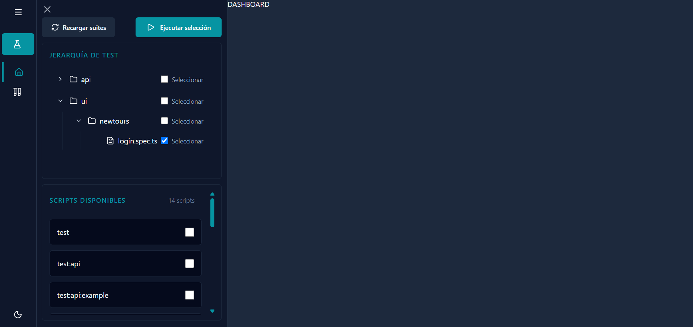
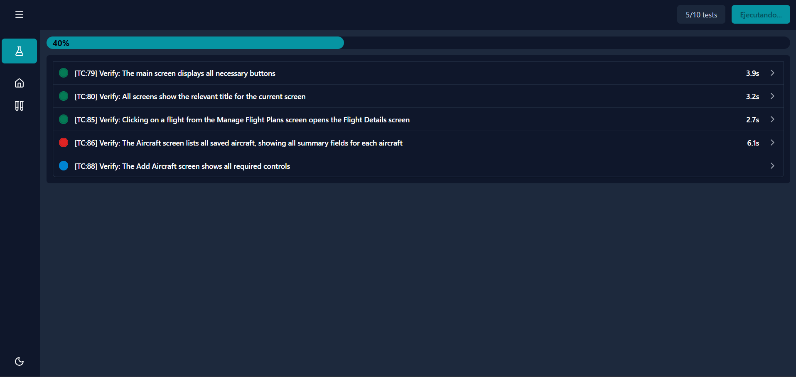
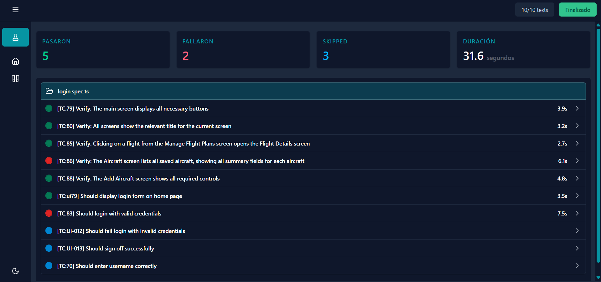
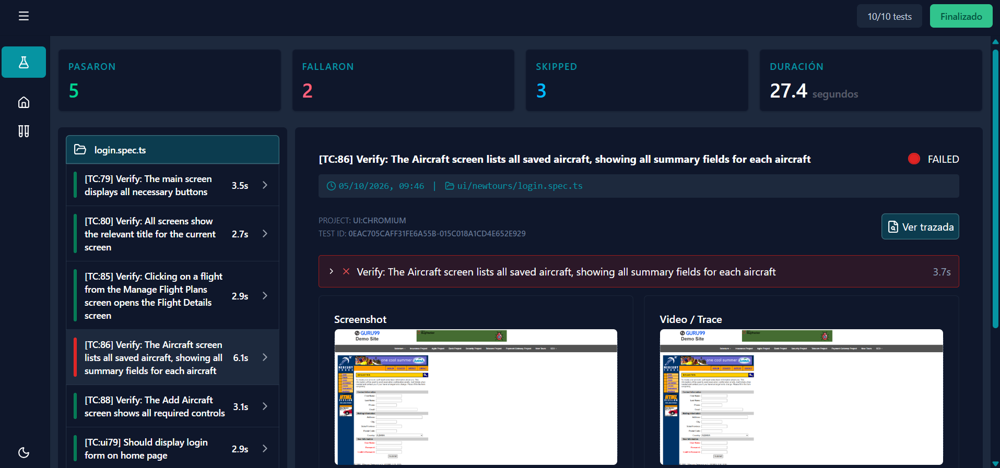
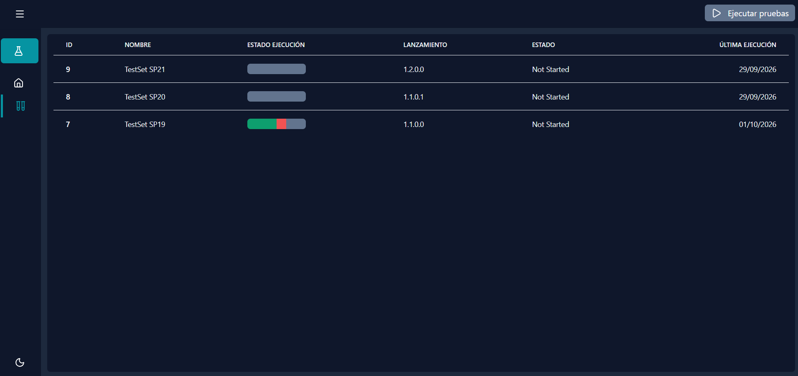
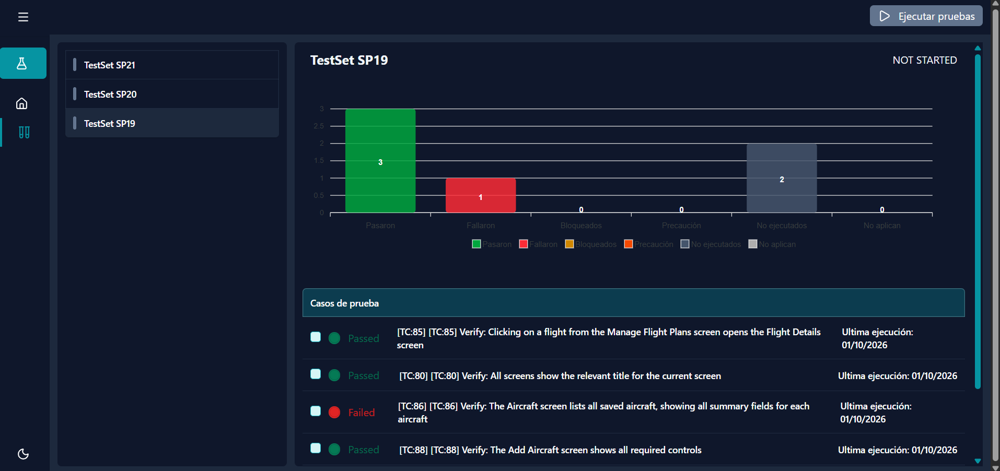
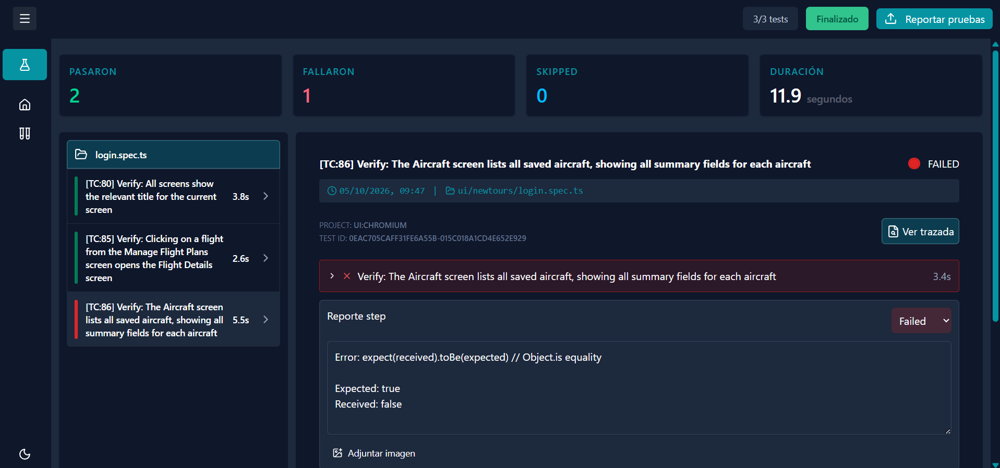

Interfaz de usuario
Desde el navegador puedes elegir suites, revisar ejecuciones, abrir evidencias y consultar conjuntos de SpiraTest.
Documentación del producto
ZeroApp centraliza la selección de pruebas Playwright, la ejecución en tiempo real y la consulta de evidencias. También permite trabajar con conjuntos y casos de prueba procedentes de SpiraTest.
ZeroApp reúne en una sola interfaz la selección de pruebas automatizadas, su seguimiento y la revisión de resultados.
Desde el navegador puedes elegir suites, revisar ejecuciones, abrir evidencias y consultar conjuntos de SpiraTest.
El backend coordina el inicio de las ejecuciones, envía actualizaciones a la interfaz y sirve archivos de resultados y evidencias.
El proyecto de automatización contiene las pruebas y genera resultados, pasos y evidencias que la aplicación presenta.
Permite consultar conjuntos y casos, asociar casos automatizados y enviar los resultados de una ejecución terminada.
Como usuario, el recorrido habitual empieza en la interfaz web. No es necesario ejecutar comandos de Playwright para usar las funciones disponibles desde la aplicación.
ZeroApp combina una interfaz web, un servicio backend y un proyecto independiente de automatización Playwright. Cada parte tiene responsabilidades diferenciadas.
Interfaz web por componentes, navegación entre vistas y estado compartido para seguir ejecuciones.
API modular que inicia ejecuciones, comunica eventos y conecta con SpiraTest.
Pruebas UI y API organizadas por proyectos, con resultados y evidencias para análisis.
El frontend envía las suites, scripts y casos seleccionados.
Fastify enruta la petición al servicio de ejecución.
Playwright corre las pruebas; SSE comunica inicio y finalización.
La interfaz presenta el reporte y permite publicarlo en SpiraTest.
Antes de iniciar, confirma con la persona administradora que el entorno esté preparado:
La aplicación está organizada para que puedas pasar de la selección a la ejecución sin perder el contexto.
Abre o contrae la navegación, accede al Dashboard, entra en los conjuntos de tests y cambia entre tema claro y oscuro.
Abre el panel lateral desde el que se seleccionan carpetas, archivos y scripts de Playwright.
Muestra el progreso, el resumen y la lista de resultados agrupada por archivo.
Permite consultar conjuntos de SpiraTest, revisar sus estadísticas y lanzar casos automatizados.
Utiliza este flujo para ejecutar una selección directa de suites y scripts.




El contador indica las pruebas completadas frente al total. La barra visualiza el avance de las pruebas pasadas y fallidas.
Durante la ejecución aparece Ejecutando.... Cuando termina, el estado cambia a Finalizado.
Al finalizar se muestran las pruebas pasadas, fallidas, omitidas y la duración total en segundos.
Los resultados se agrupan por archivo. Selecciona una tarjeta para abrir el detalle de una prueba. El color de la tarjeta ayuda a localizar rápidamente los fallos y los resultados correctos.
Selecciona una prueba de la lista para revisar su información completa:
Consulta el nombre, estado, archivo de origen, proyecto, identificador y duración.
Expande cada paso para consultar su duración, estado, detalles y los pasos hijos.
En una prueba fallida se muestran el mensaje, el stack trace y, cuando existe, un fragmento de código relacionado.
Abre el screenshot desde la ventana emergente o accede al trace de Playwright mediante su visor.
La sección Conjunto de tests permite consultar conjuntos de pruebas y ejecutar los casos que tienen automatización Playwright asociada.
El detalle incluye un gráfico con casos pasados, fallidos, bloqueados, en precaución, no ejecutados y no aplicables. La barra de la tabla representa visualmente pasados, fallidos, no ejecutados y bloqueados.



Los datos de las capturas corresponden al entorno de ejemplo y pueden variar.
Cuando una ejecución se inició desde un conjunto de SpiraTest, la pantalla de resultados ofrece la acción Reportar pruebas al finalizar.
Los nombres pueden variar según el origen del resultado. Esta es la interpretación habitual:
| Estado | Qué significa | Qué hacer |
|---|---|---|
| Pasado | La prueba terminó correctamente. | No requiere acción, salvo validación funcional. |
| Fallido | Uno o más pasos no se completaron correctamente. | Revisar error, screenshot, trace y stack trace. |
| Omitido | La prueba no se ejecutó. | Comprobar la configuración y las condiciones de ejecución. |
| Bloqueado | El caso no puede avanzar por una dependencia o impedimento. | Resolver el bloqueo antes de volver a ejecutar. |
Estas son oportunidades de evolución del proyecto, no funcionalidades disponibles actualmente.
| Mejora propuesta | Beneficio para el usuario |
|---|---|
| Dashboard con actividad y métricas | Ver ejecuciones recientes, tendencias de fallos y accesos rápidos desde la pantalla inicial. |
| Configuración de proyectos y entornos | Cambiar de proyecto SpiraTest y entorno sin depender de valores fijos por despliegue. |
| Historial y búsqueda de ejecuciones | Encontrar ejecuciones anteriores por fecha, suite, estado o caso y comparar resultados. |
| Visualización de requisitos | Visualizar requisitos con las descripciones, versiones, cobertura etc |
| Visor de evidencias integrado | Abrir screenshots, vídeos y traces sin depender de una dirección local fija. |
| Reporte incidencias en Spiratest | Permitir crear y asignar incidencias cuando un testcase falló |
| Integración con Jira | Permitir crear incidencias cuando un testcase falló |